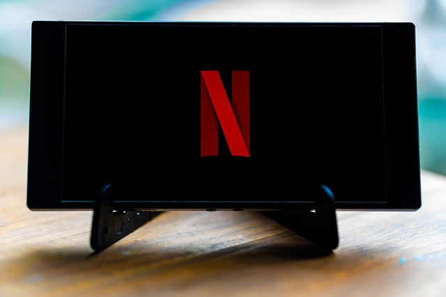

Movies
Exploring the World of Cinema!
Welcome to my digital space dedicated to one of my favorite hobbies - watching movies and TV shows. Join me on a journey through the captivating world of cinematic storytelling, from Hollywood blockbusters to indie gems, and everything in between.
The Fascination with Movies and TV
Movies, the epitome of storytelling condensed into a few hours, encompass a spectrum of genres. From adrenaline-pumping action and laughter-inducing comedies to poignant dramas, each film presents a unique narrative. Here, we delve into the artistry of filmography, scrutinize the craft of directors, and appreciate the talents of actors and actresses. TV shows, in contrast, offer extended narratives akin to literary sagas. Comprising a diverse array of genres, they provide a prolonged engagement with characters and plotlines. Our discussions will encompass situational comedies, riveting dramas, and the latest releases in the television landscape.
Navigating the Digital Streaming Era
The modern era has ushered in a wave of convenience through streaming platforms like Netflix, Hulu, and Amazon Prime. These platforms have become the repositories of cinematic excellence, and I shall serve as your guide in navigating this digital cornucopia. Expect recommendations, insider insights, and suggestions for your viewing pleasure.
Reviews and Recommendations:
Critiques are essential in assessing the quality of cinematic creations. Our film reviews will dissect narratives, analyze performances, and assign verdicts. Additionally, I will curate a selection of TV show recommendations across various genres to cater to diverse tastes.
Unveiling the Artistry:
We shall also embark on an expedition behind the scenes, delving into the intricacies of cinematography, special effects, and the enchanting world of movie soundtracks.
Facts and Anecdotes:
A treasure trove of trivia awaits. Discover hidden Easter eggs and explore the peculiar anecdotes from behind the curtains of both movies and TV shows.
Crafting the Ultimate Home Theater:
For the homebody cinephiles, I will offer insights into creating an impeccable home theater setup. We shall also discuss the culinary accompaniments, ensuring that your movie nights are complete with the perfect snacks.